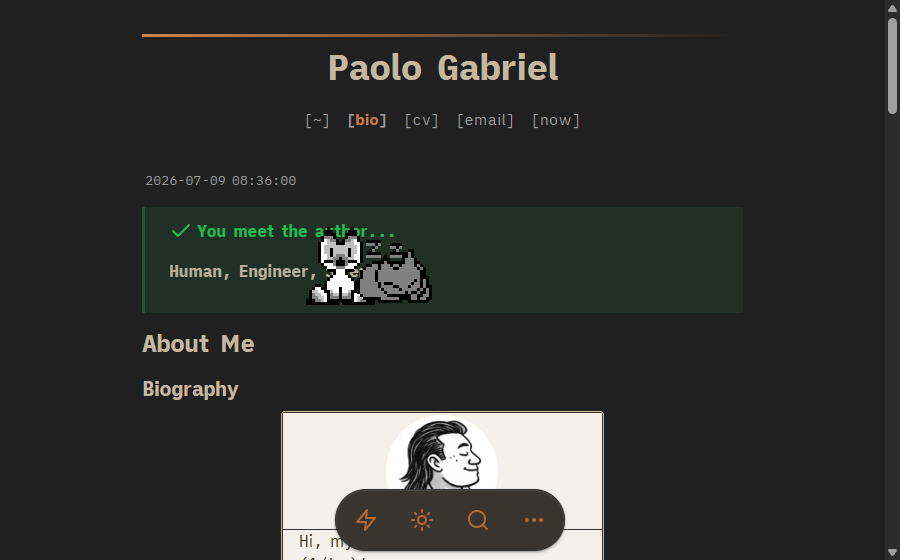
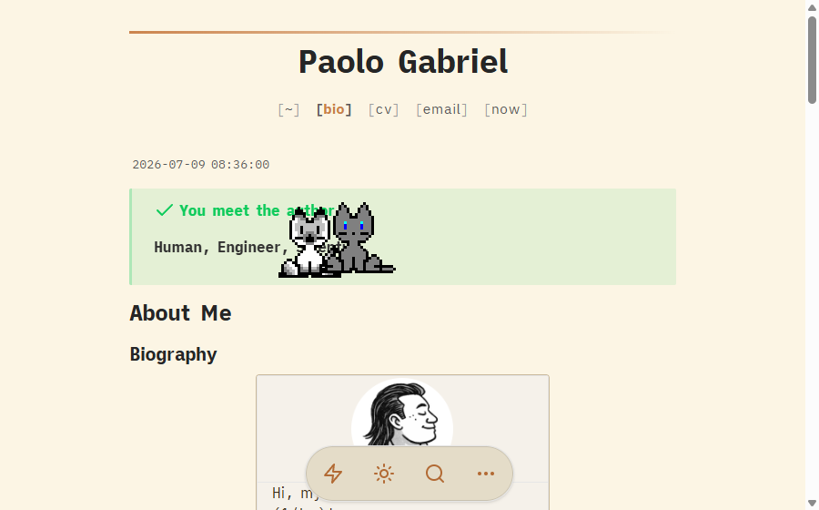

dg-summon-cats
Summon Greta and Nigel into your Digital Garden.


Two bonded Neko cats roam above your garden. Tap or click anywhere and Greta and Nigel walk toward that point, then settle into idle, sleeping, or scratching animations. Greta is the cream spirit cat; Nigel is the faster gray cat.
Inspired by WebNeko. The chase / idle / sleep / scratch interaction follows WebNeko (first encountered via chardidath.ing). This skill packages Greta and Nigel as a reusable, upstream-safe Digital Garden feature with local sprite assets and reduced-motion behavior — no runtime CDN.
Install with an agent
git clone https://github.com/palol/skills-zoo.git
cp -r skills-zoo/skills/dg-summon-cats ~/.claude/skills/(or ~/.agents/skills/)
Use dg-summon-cats to add Greta and Nigel to this Digital Garden. Install the footer component, styles, and local sprite sheets; build it; then verify pointer and reduced-motion behavior.
What it installs
- A footer-autoloaded runtime component at
components/user/common/footer/zzz-summon-cats.njk. - A small style block appended to
custom-style.scss. - Two 256×128 local sprite atlases under
src/site/img/user/.
No layout edits, runtime CDN, cookies, tracking, or network requests.
Behavior
- One Pointer Events listener handles mouse, touch, and pen.
- Cats ignore pointer events, never receive focus, and do not block page controls.
- Viewport resizing keeps both cats on screen.
- Reduced-motion mode stops continuous movement and relocates cats in an idle frame.
- A global guard prevents duplicate cats if initialization runs twice.
What's in the box
- SKILL.md — install workflow, prerequisites, and risk
- assets/zzz-summon-cats.njk — Neko animation controller
- assets/summon-cats.scss — fixed positioning and tuning knobs
- assets/greta-neko.png — cream/spirit sprite atlas
- assets/nigel-neko.png — gray sprite atlas
- references/architecture.md — lifecycle and source adaptation
- references/tuning.md — scale, speed, timing, and sprite replacement
- references/verify.md — build and interaction QA
Prerequisites
- An oleeskild Digital Garden + Eleventy site with user footer autoloading.
- A compiled
custom-style.scss. src/site/imgpassed through to the built/imgroute.